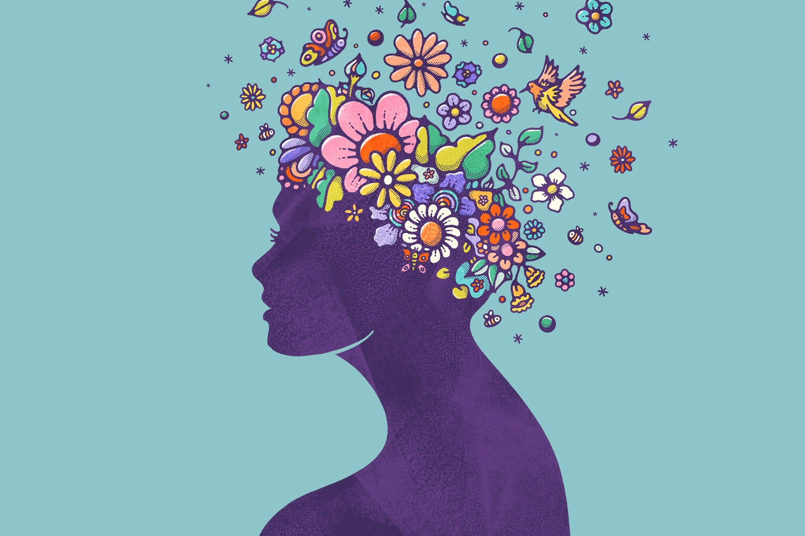
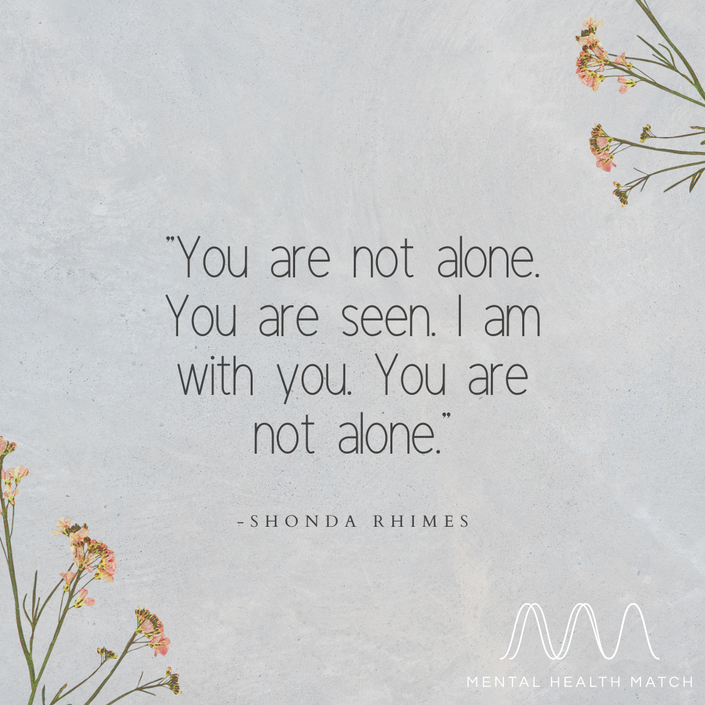

Welcome! This is a website that has been carefully created by two year 12 students. We decided to make this website to help others, by promoting tips and sharing other people's advice on how they faced mental health illnesses. We hope that by sharing our stories and knowledge and providing more information on this topic, there will be more understanding and awareness on mental health matters! Charlotte (one of us year 12s) has experienced going through this struggle and she will share her story (later on) to help others facing similar situations, that she faced.
This website is here to assist you with facing a mental health disorder or assist someone else you know get through this.
Research has proven that one in five adults will experience mental-ill health each year.
75% of these people willl have their first experience of mental illness when they are under the age of 25 years.
Recent Data from a headspace national survey found that one in three young people aged 12-25 years old reported high or very high levels of psychological distress- a rate that has more than tripled since 2007.
Mental Health disorders carry the largest burden of disease for 15-24 year olds and shockingly, suicide is the most common cause of death for this age group
1 in 4 adolescencets will experience mental health problems this year and nearly two thirds of them will not seek help.
Alarmingly 1 in 7 primary school students are also likely to experience mental health problems.
 